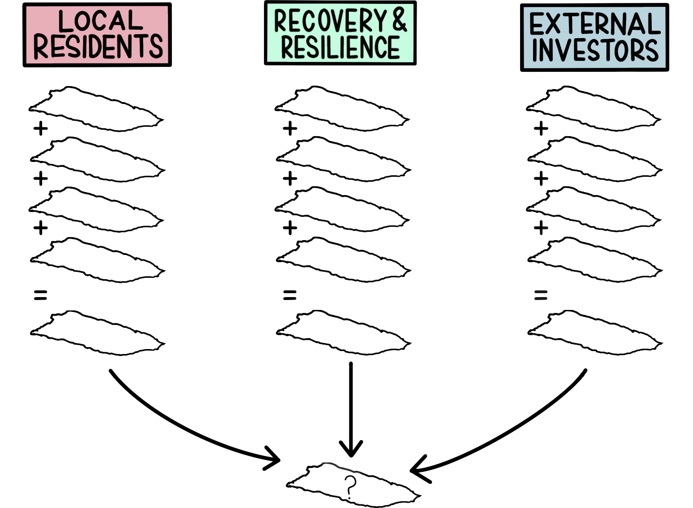

community agency through mapping
 Puerto Rico
Collaborator Gloria Serra Coch
Following the aftermath of Hurricane Maria in September 2017, Puerto Rico’s electrical grid failed, water systems were inoperable, debris from landslides blocked roads, cellular sites were knocked out, and households were damaged, among the numerous other challenges. This natural disaster put Puerto Rico in the spotlight for relief, but the U.S. Territory had already been struggling with a financial crisis as a consequence of its colonial history and limited sovereignty.
As disaster funds for Puerto Rico are allocated, how and where funds are distributed reflect the political priorities of those in power. Through its history of colonization, the government authority has been widely distrusted by Puerto Rican communities to distribute funding appropriately. If Puerto Ricans can provide a rational argument that spatializes the needs and priorities of their communities and speaks the language of planners, they can proactively advocate for where relief funds should be allocated. The decision model can be used as a tool for communities to gain agency in mapping their priorities for improvements.
This project empowers data literacy as an initiative to offer a mapping tool to a community that is ready to use it to push for their own needs with two main objectives. Firstly, decision based maps can be used to document community values by spatially recording information about Puerto Rican priorities in a map to imagine a future for the island. Secondly, these maps can be used as an advocacy tool for local leaders to communicate the needs of their communities within the language of planning ‘experts’ to rationally stake a claim for areas that should be prioritized for improvements.
For further information, refer to the Conflict Resolution project and additional student research projects on Conflict Urbanism Puerto Rico Now for through the Columbia University Center for Spatial Research, led by Laura Kurgan and Frances Negron-Muntaner.